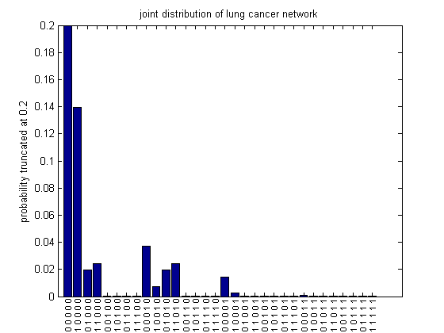

Contents
% Lung cancer network % Make DAG % S % / \ % v v % CB LC % \/ \ % v v % SOB X S = 1; CB = 2; LC = 3; SOB = 4; X = 5;
Make CPDs
Specify the conditional probability tables as cell arrays The left-most index toggles fastest, so entries are stored in this order: (1,1,1), (2,1,1), (1,2,1), (2,2,1), etc.
CPD{S} = tabularFactorCreate(reshape([0.8 0.2], 2, 1), [S]);
CPD{CB} = tabularFactorCreate(reshape([0.95 0.75 0.05 0.25], 2, 2), [S CB]);
CPD{LC} = tabularFactorCreate(reshape([0.99995 0.997 0.00005 0.003], 2, 2), [S LC]);
%CPD{SOB} = tabularFactorCreate(reshape([0.95 0.9 0.5 0.25 0.05 0.1 0.5 0.75], 2, 2, 2), [CB LC SOB]);
CPD{SOB} = tabularFactorCreate(reshape([0.95 0.5 0.5 0.25 0.05 0.5 0.5 0.75], 2, 2, 2), [CB LC SOB]);
CPD{X} = tabularFactorCreate(reshape([0.98 0.4 0.02 0.6], 2, 2), [LC X]);
jointT = tabularFactorMultiply(CPD);
jointDGM = jointT.T;
Convert from DGM to UGM
cliques are {S,CB,LC}, {SB,LC,SOB}, {LC,X}
fac{1} = tabularFactorCreate(ones(2,2,2), [S, CB, LC]);
fac{1} = tabularFactorMultiply(fac{1}, CPD{1}, CPD{2}, CPD{3});
fac{2} = CPD{SOB};
fac{3} = CPD{X};
jointT = tabularFactorMultiply(fac);
joint = jointT.T;
assert(approxeq(joint, jointDGM))
Display joint
lab=cellfun(@(x) {sprintf('%d ',x)}, num2cell(ind2subv([2 2 2 2 2],1:32)-1,2));
figure;
%bar(joint.T(:))
bar(joint(:))
set(gca,'xtick',1:32);
xticklabelRot(lab, 90, 8, 0.025)
title('joint distribution of lung cancer network')
ylabel('probability truncated at 0.2')
set(gca,'ylim',[0 0.2]) % zoom in
printPmtkFigure('lungcancerJointBar')
 Inference
pS = tabularFactorMarginalize(jointT, S); assert(approxeq(pS.T, [0.8; 0.2])) pSCB = tabularFactorMarginalize(jointT, [S, CB]); pCBgivenSOB = tabularFactorConditional(jointT, CB, SOB, 2); assert(approxeq(pCBgivenSOB.T, [0.5038; 0.4962])); pCBgivenSOBandX = tabularFactorConditional(jointT, CB, [SOB, X], [2, 2]); % explaining away - prob of CB is now lower given X, since LC is more % likely assert(approxeq(pCBgivenSOBandX.T, [0.5220; 0.4780])); pCBandLCgivenSOBandX = tabularFactorConditional(jointT, [CB,LC], [SOB,X], [2,2]);